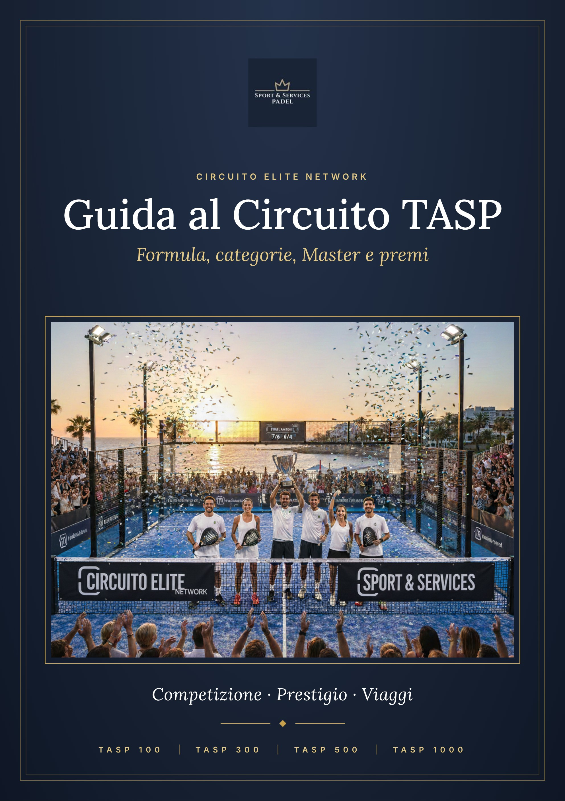

01
IL CIRCUITO IN BREVE
Il Circuito Elite Network è il circuito nazionale di padel amatoriale organizzato da Sport & Services. Si compone di quattro tipi di torneo, i TASP, che si giocano nei Club aderenti con le stesse date e lo stesso regolamento in tutta Italia. Ogni torneo parte nel Club e porta i migliori ai Master, dove si vincono i viaggi premio.
3
fasi: Club · Master Regionale · Master Nazionale
4
tipi di torneo TASP
12
eventi l’anno a regime
Viaggi
premio ai vincitori dei Master
Le tre fasi
- Il torneo nel tuo Club – la prima fase si gioca nel Club, che la organizza con il materiale fornito da Sport & Services.
- Master Regionale – le migliori coppie e squadre di ogni Club si sfidano nel Master Regionale, organizzato da Sport & Services.
- Master Nazionale – per i tornei a squadre (TASP 500 e TASP 1000) le finaliste di ogni Master Regionale si qualificano al Master Nazionale.
I quattro tornei
Torneo | Formula | Partecipanti | Tappe l’anno | Accesso |
|---|---|---|---|---|
TASP 100 | Tutto in un giorno | Coppie | 6 | Master Regionale |
TASP 300 | Torneo a gironi + tabellone | Coppie | 4 | Master Regionale |
TASP 500 | Torneo a squadre | Squadre | 1 | Master Regionale e Nazionale |
TASP 1000 | Campionato a squadre | Squadre | 1 | Master Regionale e Nazionale |
Il calendario
Il circuito parte gradualmente e arriva a regime nel 2028.
Periodo | Tornei in calendario | Note |
|---|---|---|
Da settembre 2027 | 2 TASP 100 · 1 TASP 300 | Stagione di avvio (dal 6 settembre 2027) |
Dal 2028 | 6 TASP 100 · 4 TASP 300 · 1 TASP 500 · 1 TASP 1000 | Circuito a regime (dal 10 gennaio 2028) |
Il calendario completo con le date di inizio e fine di ogni torneo è pubblicato sulla Piattaforma Online di Sport & Services.
02
CATEGORIE E REGOLE DI AMMISSIONE
Le specialità
In tutti i tornei a coppie si gioca nelle tre specialità Doppio maschile, Doppio femminile e Doppio misto.
I livelli di gioco nei TASP 100 e TASP 300
Per garantire il massimo equilibrio, i tornei a coppie sono divisi in tre livelli di gioco. I livelli di gioco sono una cosa diversa dalle membership dei Club, anche se hanno gli stessi nomi.
Livello | Profilo | Chi può iscriversi | Vincolo per coppia |
|---|---|---|---|
GOLD | Top amatoriale | Maestri e istruttori (italiani o esteri) e giocatori fino alla 3ª fascia FITP. Vietate 1ª e 2ª fascia. | Massimo 1 giocatore di 3ª fascia o maestro/istruttore per coppia. |
SILVER | Intermedio | Giocatori fino alla 4ª fascia FITP. Esclusi maestri, istruttori e 3ª fascia. | Massimo 1 giocatore di 4ª fascia per coppia. |
BRONZE | Entry level | Solo tesserati EPS. Vietata qualsiasi tessera FITP. | Nessun giocatore tesserato FITP. |
03
TASP 100 E TASP 300: I TORNEI A COPPIE
TASP 100 – Tutto in un giorno
- Formula: partite da 30 minuti; prima fase a gironi all’italiana, seconda fase a eliminazione diretta.
- Durata: l’intero torneo si gioca in una giornata nel Club.
- Qualificazione: le prime coppie classificate di ogni categoria accedono al Master Regionale.
- Tappe: 6 l’anno a regime.
TASP 300 – Il torneo
- Formula: prima fase a gironi all’italiana da 4, 5 o 6 coppie; seconda fase a eliminazione diretta.
- Qualificazione: le prime coppie classificate di ogni categoria accedono al Master Regionale.
- Tappe: 4 l’anno a regime.
04
TASP 500 E TASP 1000: I TORNEI A SQUADRE
Nei tornei a squadre non ci sono livelli di gioco: si gioca un torneo unico, con accesso diretto ai Master Regionale e Nazionale, dove si compete per il viaggio.
La formula
TASP 500 – Torneo a squadre | TASP 1000 – Campionato a squadre | |
|---|---|---|
Prima fase | Gironi all’italiana con andata e ritorno, da 6 squadre in su in base al numero di squadre per Club | Gironi all’italiana da 6 squadre in su |
Seconda fase | Eliminazione diretta | Eliminazione diretta |
Qualificazione | Le prime squadre accedono al Master Regionale; dal Regionale si qualificano le squadre per il Master Nazionale | Le prime squadre accedono al Master Regionale; dal Regionale si qualificano le squadre per il Master Nazionale |
Squadra | Minimo 4 giocatori | Minimo 4 giocatori |
Tappe | 1 l’anno | 1 l’anno |
L’incontro: 3 partite
Ogni incontro tra due squadre si gioca su 3 partite di doppio. Nelle prime due l’equilibrio è garantito dai vincoli di composizione dei doppi in campo; la terza è aperta a tutti i tesserati EPS, uomini e donne.
Partita | Regola di composizione |
|---|---|
1ª partita – Doppio Maestri / 3ª fascia | Massimo 1 giocatore di 3ª fascia o maestro/istruttore (fuori quota), che deve giocare con un compagno non tesserato FITP (tesserato EPS). È il doppio di massima competizione. |
2ª partita – Doppio 4ª fascia | Massimo 1 giocatore di 4ª fascia (fuori quota), che deve giocare con un compagno non tesserato FITP (tesserato EPS). Mantiene alto il livello amatoriale. |
3ª partita – Doppio aperto | Aperto a tutti i tesserati EPS non tesserati FITP. Possono giocare anche le donne (coppia maschile, femminile o mista), ma non è obbligatorio. |
CHI NON PUÒ GIOCARE
In nessuna partita possono far parte della squadra, uomini o donne, ex professionisti di tennis di categoria A, B o C (o 1ª, 2ª e 3ª categoria), né maestri o istruttori, salvo i fuori quota previsti nella 1ª e nella 2ª partita.
IL VANTAGGIO EPS
Per favorire la formazione delle squadre e premiare i giocatori puramente amatoriali, i giocatori non tesserati FITP (solo tessera EPS) possono disputare fino a 2 partite nello stesso incontro.
05
I MASTER
I Master sono organizzati da Sport & Services, che ne è l’unico responsabile. Si giocano il sabato, la domenica e nei giorni festivi, in Club con campi indoor che hanno superato la verifica dei requisiti.
Master Regionale
- Chi partecipa: le migliori coppie o squadre di ogni Club partecipante. Il numero dei qualificati è comunicato da Sport & Services al termine delle iscrizioni.
- Giorno 1: gironi all’italiana da 4. Per ospitare tutti gli incontri, il giorno 1 si può giocare anche in più Club.
- Giorno 2: fase a eliminazione diretta tra le migliori di ogni girone, giocata in un unico Club.
- Per i TASP 100 e 300 il circuito si conclude con il Master Regionale.
Master Nazionale (TASP 500 e TASP 1000)
- Chi partecipa: le migliori squadre di ogni Master Regionale: più squadre partecipano al Regionale, più squadre si qualificano. Il numero delle qualificate è comunicato da Sport & Services al termine delle iscrizioni.
- Formula: come per il Master Regionale, gironi da 4 il giorno 1 (anche in più Club) ed eliminazione diretta il giorno 2 in un unico Club.
NOTA
Le modalità di qualificazione indicate in questa sezione hanno valore orientativo: il Comitato Organizzatore di Sport & Services si riserva la facoltà di modificarle. Ogni variazione viene comunicata ufficialmente prima dell’inizio della manifestazione.
06
I PREMI
I premi si vincono solo ai Master: nessun premio di tappa. Tutti i viaggi sono organizzati in collaborazione con Just4Tour e sono di due tipi:
- Viaggio premio: volo aereo andata e ritorno e soggiorno di 7 notti in località prestigiose in tutto il mondo, in molti casi all inclusive.
- Weekend premio: volo aereo andata e ritorno e soggiorno di 2 notti in una città europea. Le destinazioni sono comunicate con il calendario di ogni stagione.
TASP 100 e TASP 300 – Doppio maschile: vittoria diretta al Master
Dopo ogni tappa, al Master Regionale di ogni livello (Gold, Silver, Bronze) sono premiate la prima e la seconda coppia classificata.
Torneo | 1ª coppia classificata (per livello) | 2ª coppia classificata (per livello) |
|---|---|---|
TASP 100 | Viaggio premio – 7 notti | Weekend premio – 2 notti |
TASP 300 | Viaggio premio – 7 notti, con Clinic di padel | Weekend premio – 2 notti |
TASP 100 e TASP 300 – Doppio femminile e misto: classifica a punti
Per il doppio femminile e il doppio misto il viaggio premia la costanza: si conquista accumulando punti in tutte le tappe del circuito (6 TASP 100 e 4 TASP 300). La classifica è personale e cumulativa.
Risultato | Punti |
|---|---|
Vincitore del Master Regionale | 8 punti (a scendere fino all’8° classificato) |
Vittoria del torneo nel Club | 3 punti |
Partecipazione (almeno 2 partite) | 1 punto |
Al termine del circuito le migliori coppie della classifica a punti si sfidano nel Master Finale Regionale: per ogni livello (Gold, Silver, Bronze) la prima coppia classificata vince un viaggio premio di 7 notti e la seconda un weekend premio in una città europea.
TASP 500 e TASP 1000 – Master Nazionale
Nei tornei a squadre non ci sono classifiche a punti né livelli: si gioca per il titolo. Le prime tre squadre classificate al Master Nazionale vincono un viaggio per 6 giocatori.
Torneo | 1ª squadra classificata | 2ª squadra classificata | 3ª squadra classificata |
|---|---|---|---|
TASP 500 | Viaggio premio – 7 notti | Viaggio premio – 7 notti | Weekend premio – 2 notti |
TASP 1000 | Viaggio premio – 7 notti | Viaggio premio – 7 notti | Weekend premio – 2 notti |
E NON È FINITA QUI
In ogni manifestazione Sport & Services può arricchire i montepremi con materiale tecnico e altri premi offerti dagli sponsor. I montepremi possono variare in base al numero di Club aderenti.
Entra nel circuito Elite Network: scegli la tua membership. www.sportandservicespadel.it · info@sportandservicespadel.it · 351 525 2827 · 393 330 3652